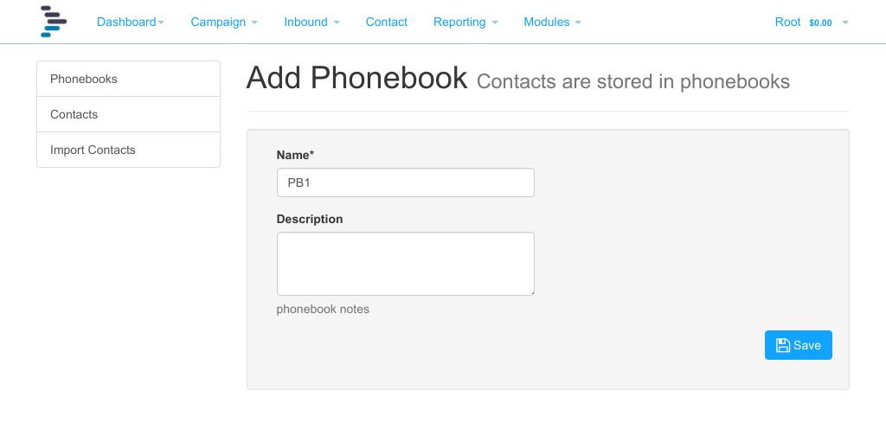
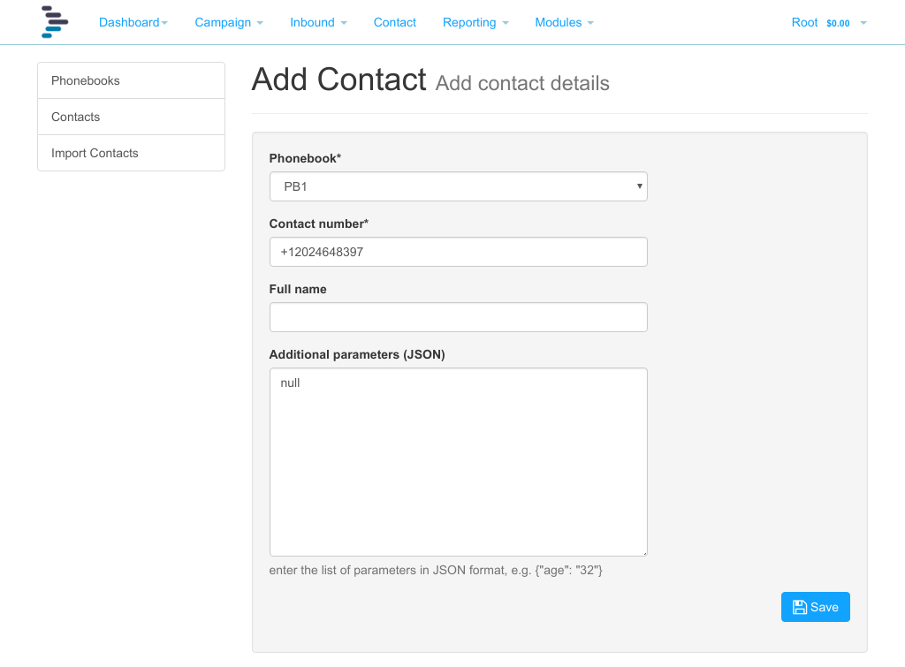
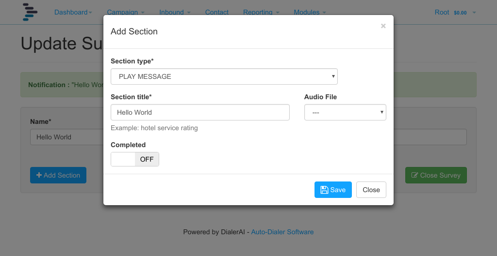
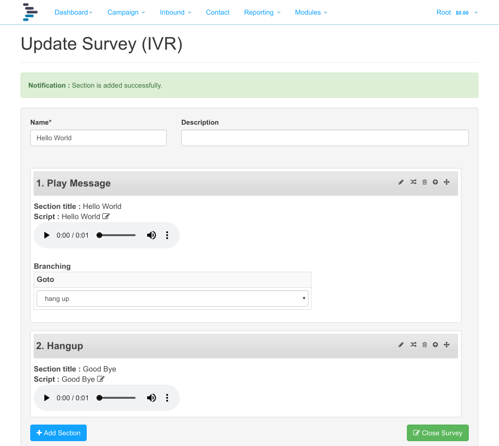
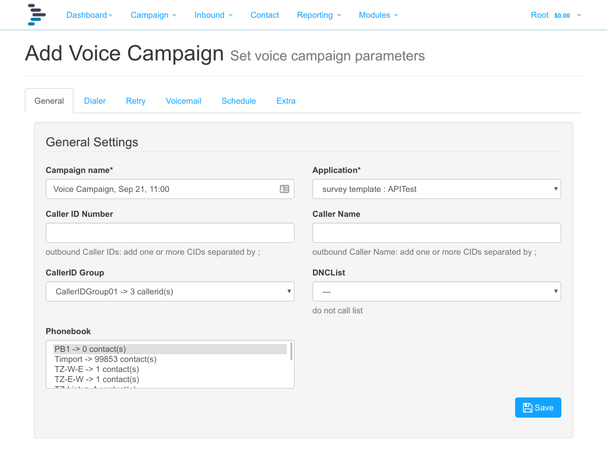

Quick Start¶
The purpose of this short guide is to give a quick overview from creating a suvey through to making an outbound call. It is recommended that you run through this guide on your own platform before attempting more complex surveys and campaigns.
There is a video demonstrating the quick start guide:
- We are going to use the customer portal to:
- Create a phonebook
- Add some contacts to the phonebook
- Create campaign using the survey and campaign
- Start the outbound voice broadcast.
NB: These tasks should always be done from the Customer Portal and not from the Admin Interface. To proceed, click “Customer Panel” at the top of Admin interface.
Create Phonebook¶
The phonebook is where lists of subscribers are grouped. Click Customer Panel on the top menu in the Admin Dashboard, then click Phonebook, and add a new phonebook.
Create a new phonebook called, for the purposes of the exercise, PB1, and give it a description.
Add Contacts¶
Click contact, and add a new contact. As a minimum add a phone number to call in the Contact field, and for the purposes of this demonstration, enter your own telephone number in full international format including the leading +, for instance +12024648397 in the USA or +441179114474 in the UK
Repeat as necessary until you have your test numbers added.
It is possible to upload numbers from a text file. The methodology is covered later in this guide.
Add Survey¶
Next we are going to configure the survey that will be executed when DialerAI calls your phone and you answer. Click Modules, Survey, then click add. As is traditional with first steps, we will call this survey “Hello World”.
The aim is that DialerAI will call you, and when you answer, DialerAI will broadcast “Hello World” to you using the text to speech engine in Freeswitch.
Click “Add Section” and select “Play Message”, enter “Hello World” in the section title. This is the speech that will be read out by the TTS engine. It can be edited later. When done, click save.
Best practice is that we should explicitly hangup, and mark the survey as complete, so click “Add Section” and select Hangup as the node type. Type “Goodbye” in the section title, and tick “Survey complete”
Next, set up the node branching. On the play message panel, click the branch icon, and select “Goodbye” as the next destination.
Finally, click Close Survey, and move on to configuring the campaign.
Configure Campaign¶
We now have all the components to create and run our campaign, so click campaign, and click add.
Give the Campaign a name, say “CPN Hello World”, optionally, a description, set a caller ID to pass the called party, select the A-Leg Gateway you configured earlier, the application, Hello World, and highlight the phonebook PB1, and submit. You will be returned to the list of campaigns.
Start The Campaign¶
We are now ready to launch the campaign, simply press the Play button against the CPN Hello World campaign.
In a few seconds, your campaign will launch, your phone will ring, and you will hear “Hello World” followed by “Goodbye” broadcast to you over the phone.
Note
In some countries, telemarketing, phone polling, and automated dialling is under regulatory control, and advice should be sought as to how best to remain within the limits of the law. First points of reference may be Ofcom in the UK and the Federal Trade Commission (FTC) in the USA.